Board of Trustees
Meet the dedicated individuals guiding the UCA Community Foundation.
Executive Leadership
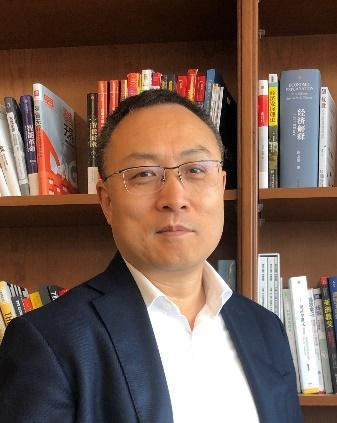
Gene Chang常劲
CHAIRGene Chang was born in China and began his studies in Physics at Peking University in 1986. He came to the United States in 1990 and earned his bachelor’s degree in Physics from the University of San Francisco in 1993, followed by an MBA from Columbia Business School in 1996. Gene currently serves as Vice Chairman and Chief Operating Officer of Himalaya Capital, a multi-billion-dollar value investing firm based in Seattle. He is also the Honorary Chairman of the Chinese CEO Organization and previously served as Chairman of the Board of Trustees of the UCA Community Foundation (UCACF) from 2023 to 2024.
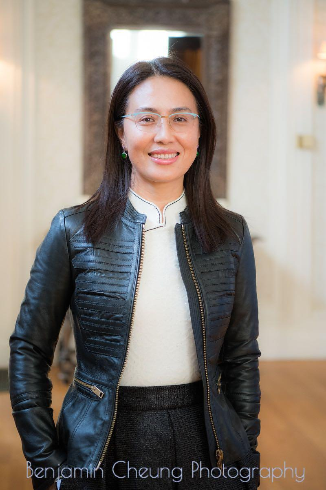
Qian GE葛倩
VICE CHAIRBorn in Gansu, grew up in Wuhan, I'm a northerner who has southern living habits. I have founded three companies in China. I have been serving as the chairman of two NGOs in the states.
In 2013, I came to the states to accompanied my children for high school. After several years of adaptation, I established Westar, a 501C3 organization whose purpose is to serve the Weston community, with a group of enthusiasts living in Weston in 2018. In the early days of COVID-19 in 2020, I worked with more than 50 Chinese associations to coordinate the donation and to deliver a tremendous amount of Personal Protection Equipments to China and to US later on. NECAA (New England Chinese American Alliance) was founded in November 2020 to keep the momentum and continue the movement.
I’m a life experiencer, observer and thinker. I’m looking forward to finding a better self with the help of you all!
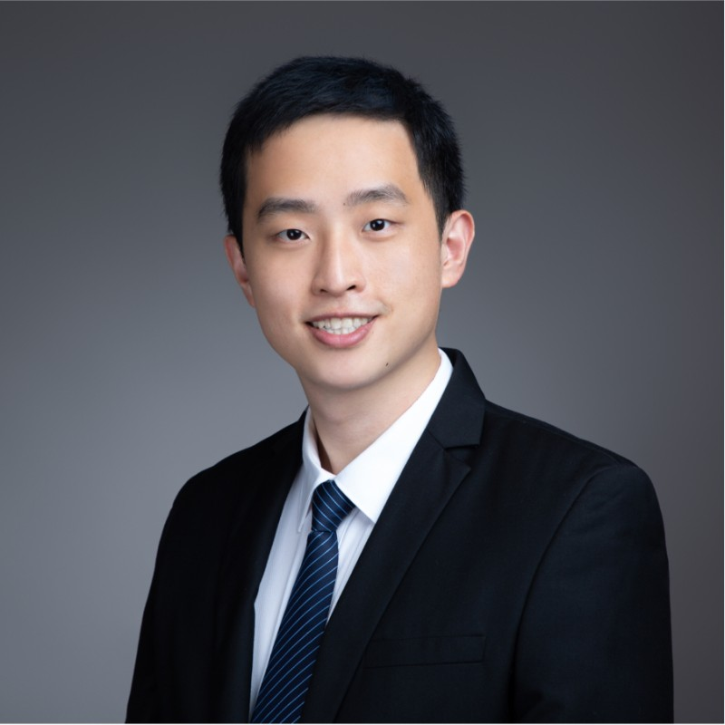
Dawei Shi 施大尉
SECRETARYDawei is the Chief Partnership Officer at IntelliPro Group, based in Silicon Valley (PST) and an MBA graduate from Columbia Business School.
IntelliPro Group is the largest bilingual HR services company globally, founded in Silicon Valley 15 years ago. Operating in 18 countries with over 400 industry consultants, it provides one-stop solutions for executive recruitment and global team management to top tech companies like Google, Meta, LinkedIn, ByteDance (TikTok), Tencent, Alibaba, and Baidu.
Dawei is a Co-founder of the Facebook House tech community, the birthplace of Facebook/Meta in 2004. Over the past year, he hosted 100+ AI-powered technology seminars and forums featuring prominent Asian leaders from politics, business, and academia. Founder of the Global MBA Network, connecting business school alumni through regular gatherings in major developed economies.
Dawei is an Executive Committee member at UCACF (United Chinese Americans Community Foundation), focusing on enhancing civic engagement and the influence of the Chinese-American community in U.S. society.
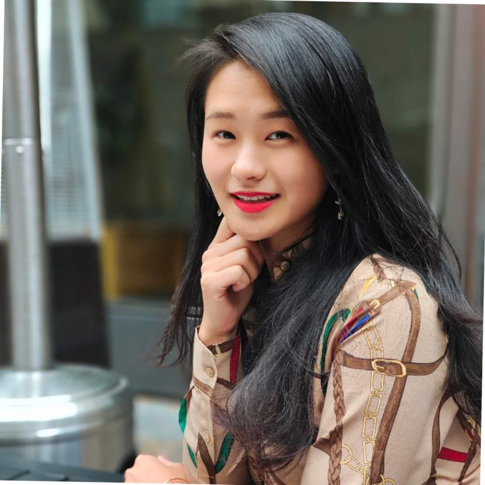
Dr. Louise Ruihua Liu 刘瑞华
TREASURERDr. Louise Ruihua Liu, a rising star in AI & data science and a series entrepreneur, serves as the CEO of Hill Research. After earning her Ph.D. from the Chinese Academy of Sciences, she founded CB Payments Inc. (CBP) in 2018. Meanwhile, she further honed her expertise with a postdoctoral fellowship in AI & Biostatistics at Yale University. Dr. Liu started the pioneering work in computational models for fraud detection which was applied to CBP business, reinforcing her authority in data science and business acumen. Under her visionary leadership, CBP became the exclusive partner of the Bank of China US branch in 2020 and reached a transaction volume of $2 billion.
Dr. Liu's industry contributions were notably recognized when Forbes China listed her among the Top 60 Outstanding Chinese in North America in 2021. In 2022, CB Payments Inc. (CBP) was acquired successfully, further boosting the company's industry reputation. Following the successful transition of CB Payments Inc., Dr. Liu founded Hill Research, which is an innovative technology firm. Embracing the power of AI, the company aims to aid patients by streamlining the process for pharmaceutical entities with AI solutions to speed up clinical trials. Hill Research serves elite clients such as Contract Research Organizations (CROs) that cater to industry giants such as Moderna, Merck, and Novartis Pharmaceutical. Since its establishment, the firm has successfully processed real data from over a million patients, demonstrating its increasing impact in the realm of clinical research. In 2024, Hill Research was invested by Dr. Lu Qi, capital backed by OpenAI CEO Sam Altman.
Trustees at Large
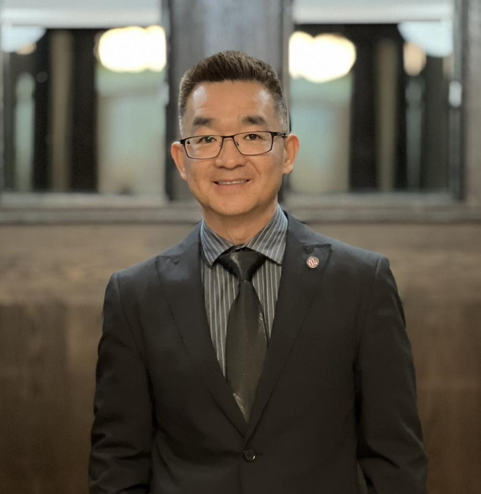
Gary Yu俞国梁
• National Board Member of UCA, Chair of Communication Committee of
UCA, Co-President of the Massachusetts Chapter of the United Chinese American(UCA) 2020-
Present
• Founder and CEO of Boston International Media Consulting, Inc
• Expertise in politics campaign, media relations and marketing
• Extensive connections in government, business, community-based organizations and
professional nonprofits in Asian community
• Instrumental contributor to Boston Mayor Michele Wu’s and Massachusetts Governor Maura
Healey’s election campaign
• President of the Boston Chapter of the Asian Pacific Islander American Public Affairs
Association (APAPA) 2017 - Present
• President, New England Chinese American Alliance (NECAA) 2023- Present
• MA Auditor-Elect Diana Dizoglio‘s Transition Team Member
• MA Suffolk County District Attorney Kevin Hayden‘s Transition Team Member
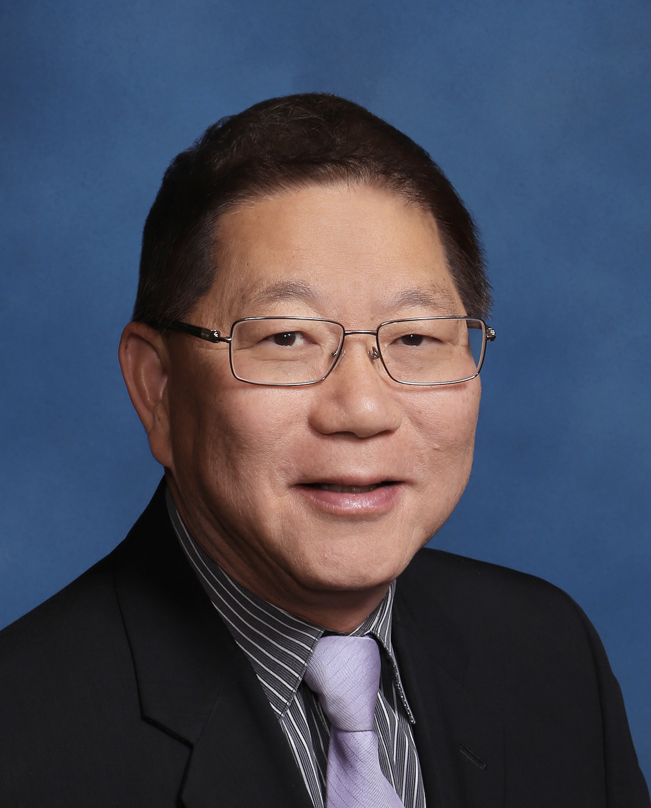
Charles K. Tsui 徐国富
Charles was born in Shanghai and grew up in Hong Kong. He came to US in 1972 and attended University of Maryland. He graduated with BS degree in Business Management 1977. He moved to Phoenix in 1979 and started a string of Chinese restaurants to the next 20 years. He retired in restaurant business in Year 2000 and started his career in insurance.
A true entrepreneur at heart, Charles started many Asian organizations and served the leadership role until other leaders came forward. He was the founder of Arizona Asian American Association, OCA Phoenix Chapter, Phoenix Dragon Lions Club, Arizona Chinese Restaurant Association, Chinese Week, and Arizona Asian Festival. These entities are still in operations after over 30 years. On the public sector arena, he was the Phoenix Sister City Chengdu Chair and the Arizona Racing Commissioner for over a decade.
Charles love and dedication for the Chinese community led him to start the Chinese American Foundation of Arizona in 2020 under the Arizona Community Foundation. In 2022 he cofounded United Chinese American chapter in Arizona.
Charles retired from Commercial and Personal Insurance in 2022 but continued to serve the community specializing in health care. This is a meaningful because he is helping many who would have not been able to access health care without his assistance. Charlies is married to Grace Lau and have one daughter and three grandsons.
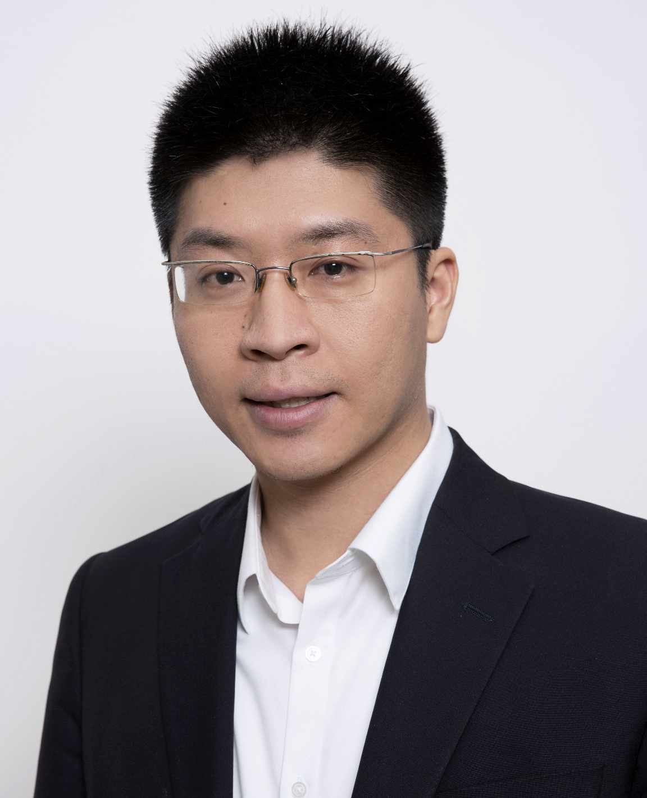
Seamon Chan陈希孟
Seamon Chan is Founding Partner at Palm Drive Capital, a global venture capital firm invested in over 150 technology startups across five continents including WeLab, Jet.com, Carta, Clover Health, Rippling, Rappi, Flutterwave, and Boom Supersonic. Previously, he was at Insight Partners, a $100 billion venture capital and private equity firm. Seamon brings entrepreneurship and operating experience through startup roles in the mobile, gaming, advertising, and social networking spaces in the US, Asia, and Europe. Earlier in his career, he gained corporate and research experience at Hitachi Data Systems, Citigroup, Stanford Artificial Intelligence Lab, and Stanford Center for Integrated Systems.
Seamon graduated from Stanford University and the Owner/President Management program at Harvard Business School, and is completing the Tsinghua University People’s Bank of China School of Finance Belt Road Initiative EMBA Program. Seamon is Chair of Milken Institute Young Leaders Circle (Asia), a member of the Economic Club of New York, the Asia Society Southern California Advisory Board, China Institute-Serica U.S.-China Next-Gen Leaders Circle, and Term Member at the Council on Foreign Relations. He was honored as a Committee of 100 Next Generation Leader in 2018 and currently serves on the NGL Advisory Council.
During the 2020 COVID-19 pandemic, Seamon co-founded MillionLives.org, a non-profit initiative to donate medical supplies to underserved communities around the world. He is an advisory board member at the Mekong Future Initiative, a Singapore-based non-profit organization focusing on youth education and entrepreneurship in the Mekong region. Through Palm Drive, Seamon has pledged a seven-figure amount to The Billion Dollar Fund for Women (Beyond the Billion), a global consortium of venture funds committed to tackling the gender investment gap by increasing their investments in women-founded companies.
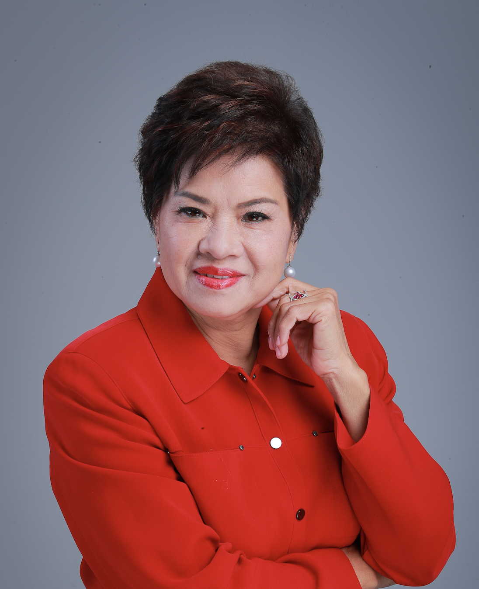
Sophia Li李惠琼
Sophia Li, founder of BioCalth International Inc in the United States, and the head of the Los Angeles Chinese Art Choir. She is also the vice president of the US-China Business Association and the president of the Chinese Association in West Covina, Los Angeles. In 1982, she graduated with a degree in vocal music from the Guangzhou Xinghai Conservatory of Music.
Li is a female entrepreneur, social activist, and organizer and planner of music concerts. Despite her many years in business, she has not forgotten her passion for music and the arts. She has organized and planned many large-scale music concerts, including the 50th anniversary concert of the founding of the People's Republic of China, the concert celebrating the return of Hong Kong to China, the 60th anniversary concert of the victory of the Anti-Japanese War, the Los Angeles New Year concert featuring China's three tenors, the centennial concert commemorating the Xinhai Revolution, the concert of Wang Luobin's works, and her own solo charity concerts in 2008 and 2015, as well as a large-scale concert commemorating the 70th anniversary of the victory of the Anti-Japanese War and the anti-fascist war. She has made many contributions to the cultural exchange between the United States and China.
Li has been living in the United States for over 30 years. She is diligent, thrifty, innovative, loves life, likes to help others, and is full of energy and enthusiasm for public welfare. She is an outstanding social activist and an excellent representative of successful Chinese Americans who strive for excellence.
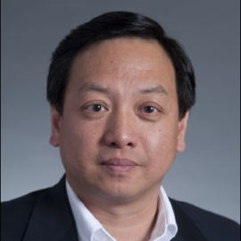
Hua Wang王华
Dr. Hua Wang’s professional experience has spanned academia, government and industry. He is currently a faculty member and an administrator at Boston University. He was a research scientist with United Technologies Research Center, a faculty member with Duke University, and a program manager with the U.S. Army Research Office. He was a recipient of various professional awards, an author of numerous technical publications and has served on many editorial and conference boards.
He has been active in serving the community – local and beyond. He is the President of the Chinese American Association of Lexington (CAAL) and serves on the boards of Lexington Historical Society and Cary Memorial Library Foundation. He was a founding board member of the Community Endowment of Lexington (CEL) and served in the past two superintendent search committees. Beyond Lexington, he serves on the national board of UCA and as Treasury of UCA-MA. He is also the founding Co-chair of New England Chinese American Alliance (NECAA).
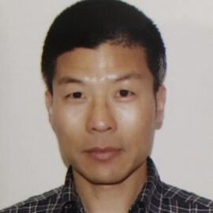
Jason Dong董校铭
Jason Dong 董校铭 is the president of United Chinese Association of Utah, has been very active in Chinese, Asian and multicultural communities for the past many years. He had served on numerous boards and committees at local, state and national levels. Jason has been a driving force to make differences in many cultural and heritage events specifically in Utah. Jason started his career in the software industry. He has been an evangelical thought leader in several areas including software engineering, security, AI and machine learning, and held patents in networking and security areas. He graduated from Peking University in China and Ohio University in Ohio.
Jason Dong is an UCA board member, serves as a representative of UCA community partner.
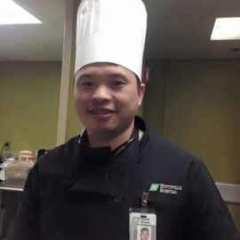
Steven Lin林青
Born in May 29,1976 in Lianjiang County, Fujian Province, and moved to the United States in 1999. Engages in foodservice and financial industry, and contracted with Huntsville Hospital, as a chef and business owner, for ten years. At present, resides in Huntsville, Alabama, and became a board member of the Huntsville Chinese Association (HCA) in 2014 before achieving the position of President of the board in 2018.
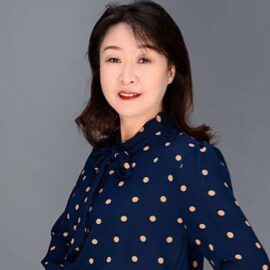
Shirley Ma马晓红
Shirley Ma, born in Shenyang Liaoning, China. She moved to the USA in 1995. She has demonstrated herself as a dedicated community volunteer and leader. Shirley joined the UCA national board in 2017 and has been an active and dedicated founding member of this organization. She has been serving as the Secretary of the Board and leading the committee of UCA Donor and Member Services. She has been the key member supporting UCA national operations and programs, UCA conventions and local outreaching activities, UCA donor database maintenance and donor following up services. She now is a senior scientist working in the area of drug development for cancer immune-therapy in the SF Bay Area.
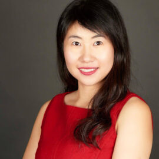
Stephanie Sun孙一
Stephanie Sun has years of experience working in various types of foundations in the U.S., --- grant management at community foundations, corporate giving in Fortune 100 companies, and state and county government grant approval and distribution for nonprofits.
She brings a wealth of international experience from working in 3 Fortune Global 100 corporations in 3 countries into her civic advocacy and public service. One of her notable contributions to the Chinese American community is spearheading the historic addition of Chinese to Pennsylvania’s election system, starting in 2022. This milestone made Pennsylvania the fourth state—and the first and only swing state—to incorporate Chinese into its election system.
Vice President, League of Women Voters-PA (1st Asian, 1st immigrant
in this role)
Former Executive Director, PA Governor's Commission on Asian Pacific American Affairs
(1st female immigrant appointed as ED of any PA Governor's Commission)
6abc Philly Proud Award, 6abc TV Station
Inaugural Above and Beyond Award, City & State
Metro Philadelphia Power Women listing, Metro Philadelphia
Legends Honoree, Philadelphia City Council Majority Leader
Philadelphia’s Emerging Asian American Leader, Philadelphia City Council Resolution #
220426.
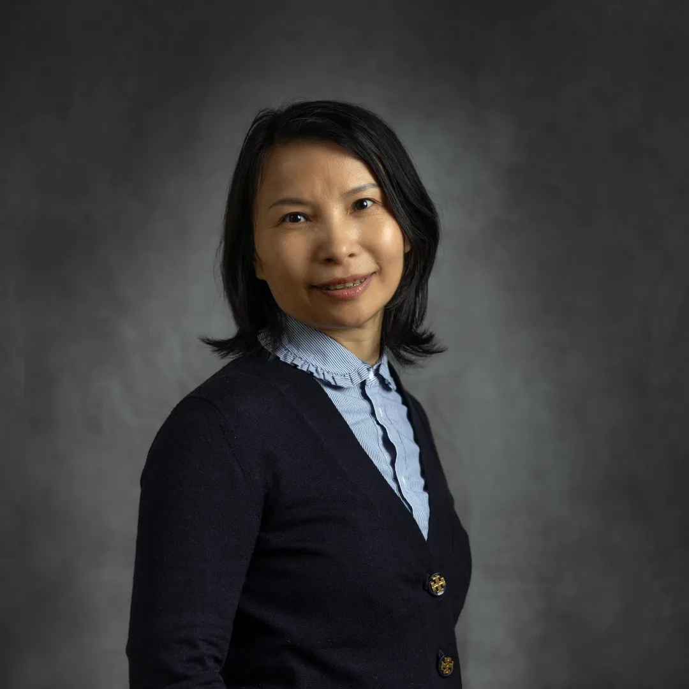
Qifei Li 李齐飞
Qifei Li began her career in PCB design in 1996. She founded her first PCB design company, Aifeiyan Electronic Technology, in 2000, and a production plant, Allfavor Circuits (formerly Aifeiyan Circuit), in 2005. Allfavor expanded through acquisitions, including Nanjing Benchuan Circuit and Zhuhai Yatu (renamed Zhuhai Allfavor Electronic), adding FPCB and rigid-flex PCB capabilities. In 2017, she established Allfavor Technology in Chicago to serve the US market. In 2021, Jiangsu Benchuan Intelligence, including its subsidiaries, became a publicly listed company.
Qifei Li is a member of the UCACF Grant Follow-Up Team. She has served at NECAA for two years and is also a dedicated supporter of UCA.
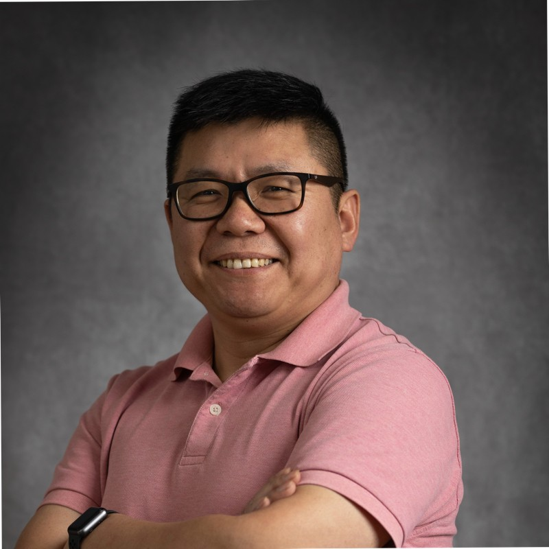
Jun Qi 齐军
Jun Qi is a Certified Public Accountant and Vice President at Fidelity Investments. He has served at NECAA for four years, handling accounting and tax-related matters, and is also responsible for NECAA Youth. He is very active in church services as well.